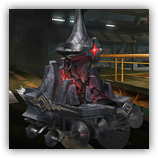

辅助支援机械 PhonoR-0
远程 法术；普通 构装
|
 |
罗德岛辅助机器人PhonoR-0。被工程师可露希尔派遣来执行战地重装任务。作为一款搭载女妖咒言法器的智能作业平台，与其他客制化的雷神工业作业平台不同，她的诞生离不开罗德岛干员的顶尖技术与女妖们之间的默契。 比起轮式作业平台，PhonoR-0更像一座移动的巫术祭坛。作为尖端工业技术与萨卡兹巫术结合的产物。PhonoR-0易于部署，能随时对行动干员进行支援，通过核心巫术元件造成独特的效应。 |
辅助支援机械丨PhonoR-0
中型构装（作战平台），守序中立
| AC 12 | 先攻 +4（14） |
| HP 22（4d8+4） | |
| 速度 30 尺 | |
| 调整 | 豁免 | 调整 | 豁免 | 调整 | 豁免 | |||||||||
|---|---|---|---|---|---|---|---|---|---|---|---|---|---|---|
| 力量 | 8 | -1 | -1 | 敏捷 | 12 | +2 | +4 | 体质 | 12 | +1 | +3 | |||
| 智力 | 14 | +2 | +2 | 感知 | 14 | +2 | +2 | 魅力 | 18 | +4 | +4 |
| 技能 历史+6，表演+6 |
| 免疫 毒素；魅惑，恐慌，力竭，中毒，震慑，目盲，耳聋 |
| 感官 黑暗视觉60尺;被动察觉12 |
| 语言 通用语，萨卡兹语 |
| CR 1（XP200；PB+2） |
特质 Traits
悠远河谷的齐唱 Chorus of a Distant Valley。PhonoR-0进行先攻检定时，为120尺内的可以听见自己声音的敌人添加凋亡标记。
模块修复 Module Repairation。支援机械受益于修复术效应时，若其生命值不小于1，则恢复1d6点生命值。
稳定底盘 Stable Chassis。在对抗造成倒地状态的效应时，支援机械的体型视为大一级的体型，且所作的豁免检定具有优势。
动作 Actions
凋亡丧钟 Death Knell。远程攻击检定：+6（若目标不免疫力竭则有优势），射程120尺。命中：10（1d12+4）黯蚀伤害。如果目标为生物则为其添加凋亡标记。
附赠动作 Bonus Actions
凋亡丧钟 Death Knell。魅力豁免检定：DC14，120尺内一个拥有凋亡标记的生物。失败：目标陷入虚弱直到PhonoR-0下回合结束，期间每次发动攻击或者移动5尺，就受到1d4+2黯蚀伤害。成功或失败：目标身上的凋亡标记被清除。